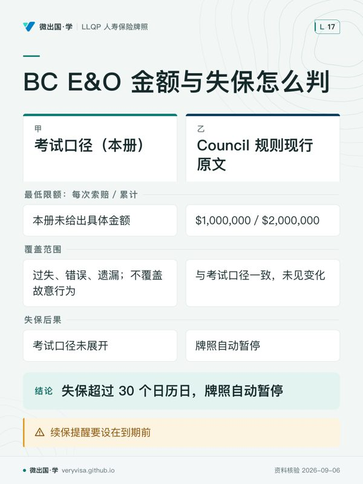

这一节接着上一节（保护客户的机构）往下讲：机构分好了层，具体到一个寿险代理人（life insurance agent）身上，他每天要履行的义务到底是哪几条、写在哪部法或哪份规则里、做错了会有什么后果。读者仍然是两类人——正在准备 Ethics（普通法）模块的考生，以及已经拿到牌、正处在 BC 24 个月监管期里，需要知道自己每一步会被监管人（supervisor）盯什么的新代理人。
考纲位置不变：component 2 占这场考试 40%，本节是它的后半——从「谁在管你」切换到「你要做什么」。学完这一节，你应该能做三件事：把一个客户投诉，按事实先分进「不公平行为」还是「一般服务纠纷」两条完全不同的后果通道；说得出需求分析（needs analysis）、适当性判断（suitability）、替换披露（disclosure about replacement）这条链上，哪一步必须留书面证据；以及分得清考试口径写的是全国通则、哪几处 BC 有自己更具体的法条依据。
ℹ️
这一页的义务清单，就是下一页监管人会拿着核对的清单
考试口径 4.2.3 逐条点名的十一类不公平或欺诈行为，是纪律案由的分类骨架；本页第六节 补了三件 Insurance Council of BC 2026 年公开的真实决定（CE 违规、E&O 失保未通报、 监管人失职），把「考试口径的分类」与「现实中真实发生的处分」对上号。 记住分类比记住某一个人名更有用：分类是长青的，具体是谁被处分，每年都在变。
一、制度设计与底层逻辑：原则管方向，规则管底线
1. 两层文本：原则约束意愿，规则约束行为
考试口径用一张对照表把代理人的行为规范拆成两层。原则（principles）说的是「应当怎么做」，比如「诚信行事」；规则（rules）说的是「不许怎么做」，违反了直接触发处罚，比如「禁止伪造文件」。Insurance Council of BC 的《行为准则》（Code of Conduct）开篇那句话把这两层为什么并存讲得很清楚：保险业的立身之本是「utmost good faith（最大诚信）」，行业要维持公众信任，靠的是能力、诚信与善意三者一起撑住——这句话本身是原则层，撑不住的具体表现才落到规则层去逐条禁止。
这个两层结构不是考试口径自己发明的，Ontario 的保险法规专门用一张表格把两者并列对照，本课把它归纳成六条主线，考试口径 4.2 节按这个顺序展开：诚信行事、管理利益冲突、禁止不公平或欺诈行为、恰当披露、遵守法规与准则、及时公正处理投诉。六条里前五条管的是「代理人自己怎么做」，第六条管的是「客户不满意时代理人怎么接」——这个顺序本身就是一条记忆线索。
2. 义务清单：出处、后果、日常落在哪一步
下面这张表把六条主线摊开，逐条填出法律或规则出处、违反后果、以及它在一次真实销售流程里对应哪一步。出处栏里出现的省级法条以 BC 为准——考试口径原文引用的是全国多个省份的对应条文，逐一列全没有意义，本页只留 BC 读者用得上的那一个。

| 义务 | 法律 / 规则出处（BC） | 违反后果 | 日常落在哪一步 |
|---|---|---|---|
| 诚信行事：谨慎义务（duty of care）、诚实可信（integrity）、专业胜任力（competence） | Council Rules 与《行为准则》第 7 条一类的通用条款；能力不足未转介属执业过失 | 客户可循 E&O 追偿；执业过失记录影响续牌与声誉 | 第一次见面到落笔推荐之间的每一步 |
| 管理利益冲突：客户利益优先、披露利益冲突、产品适当性、避免利益冲突职业 | 《行为准则》第 4、5、7 条一类条款；CCIR/CISRO 三原则 | 未披露的利益冲突被发现，通常导致纪律调查；情节严重可暂停或吊销牌照 | 首次接触、推荐产品之前 |
| 禁止不公平或欺诈行为（tied selling / churning / twisting / 回佣 / 贩卖保单 / 诱导投保 / fronting / 延迟交付 / 虚假陈述 / 挪用客户资金 / 伪造文件 / 不当自我标榜 / 滥用公司材料 / 诽谤同业，按考试口径小节及实际行为分别判断，不把此展开清单的项数当考纲数字） | Financial Institutions Act（BC）ss. 79、94、168–180 一类条款视具体行为对应；伪造与挪用另触犯《刑法》 | 从行政罚款、暂停、吊销，到刑事指控（伪造、盗窃）；考试口径明确写「即使赔了钱，牌照也很难再要回来」 | 贯穿整个销售与理赔周期，任何一步都可能触发 |
| 恰当披露：产品披露、替换披露、佣金分成披露、转介费披露 | Council Code 7.3披露、BC Reg 327/90替换要求及具体交易适用规则，不能把FIA s.178统称披露条款 | 未披露视为不公平或欺诈行为的一种，处理路径与上一行相同 | 推荐产品时、涉及替换旧保单时、涉及分佣或转介时 |
| 遵守法规与行为准则：维持 E&O 覆盖、建档、按时交付合同 | Council Rules Rule 7(11)（E&O 限额）；《行为准则》关于建档与交付的条款 | 失保超过规定天数自动停牌；无留痕的建议在纠纷中无从自证 | 签单前确认健康状况变化、交付合同、日常留存客户笔记 |
| 及时公正处理投诉 | 《行为准则》相关条款；CCIR/CISRO《公平对待客户》指引 | 投诉处理不当本身可单独构成一项违规，与投诉本身的是非无关 | 客户提出任何不满的那一刻起 |
| 反洗钱客户识别（KYC）：核实身份、持续监控、受益人核实、受益所有人识别、第三方判定、PEP 判定 | PCMLTFA 与其规章；FINTRAC 对寿险业发布的现行指引 | reporting entity（代理人本人）承担合规义务，未履行可致行政处罚，情节严重涉刑事责任 | 签单前的身份核验、业务关系存续期的持续监控、触发报告条件时 |
✕
不能用“原则层”预告处分较轻
诚信、胜任力与利益冲突要求同样可导致严重纪律后果；伪造或挪用还可能涉及刑事责任。处分须按事实、正式规则与决定判断，不能把提醒、罚款、暂停或吊销固定对应到教学分类。
二、2026 现行政策与数字：三条必须留痕的义务链
1. KYC 与反洗钱客户识别：金额门槛与时间窗口
寿险代理人须依FINTRAC各触发情形核实身份。保单或年金预计整个存续期收款达到$10,000时，相关information record与客户身份核实适用建档后30天期限；向受益人预计累计支付达到$10,000时，还须在首次汇出资金或虚拟货币之前核实其身份。不要把受益人的付款触发点改成所有保单签署日；注册年金、exempt policy等有例外，可疑交易另判（fintrac-canafe.canada.ca）。
已经核实过的身份不用重复核实，只要满足三个条件：用的是法定认可的方法核实过、留有存档、且没有理由怀疑信息有误。豁免范围也要记住：注册类年金（RRSP/RRIF/LIRA/LIF/DPSP/RPP/TFSA 等）、豁免类人寿保单，以及没有现金价值的意外与疾病险合同，购买时不需要核验身份——但保险公司出于 FATCA、CRS（跨境涉税信息交换机制）等其他目的，仍可能另行要求核实。
核验身份的法定方法有五种：政府签发的带照片证件、信用记录核验、双重来源核验、联属或会员机构核验、依赖第三方核验——这五种针对自然人；法人等实体另有存在确认、依赖及简化方法，须按主体和条件判断。这五种方法里没有一种是「信用卡或银行支票」（这是 CISRO 公开样题反复考的一个陷阱形态：见面核验金融工具不能替代法定证件）。
每种方法各自的文件条件（2026-09-05 回源，FINTRAC 现行指引）：①政府照片证件——须由加拿大联邦、省或地区政府或外国等同政府签发，真实、有效、未过期，市政府签发的证件不可用；②信用记录——须来自加拿大征信机构、已存在至少 3 年、信息来自一个以上来源，且必须在核验当时当场查询，不接受客户提供的复印件，也不能用此前已获取的旧记录；③双重来源核验（dual-process）——用两个不同可靠来源分别核对姓名+地址、姓名+出生日期、姓名+金融账户中的任意两类信息，可用传真、复印件、扫描件或电子影像，若其中一个来源用的是信用记录，该记录须已存在至少 6 个月；④联属或会员机构核验——确认代理人自己的联属机构、境外联属机构或信用合作社成员机构曾核验过该客户，且姓名、地址、出生日期一致；⑤依赖第三方核验（reliance）——须与另一受管制实体或境外联属实体订立书面协议，取得对方已确认的完整核验信息，且对方须具备与本机构相当的记录保存、身份核验与合规计划要求。
⚠️
$10,000 门槛按「保单或年金整个存续期」累计，不是按单笔
考试口径原文把这句话写得很直白：核实义务触发的条件是「客户可能在保单或年金存续期内支付达到或超过这个数」， 不是看某一次交费金额。一张分期缴费的保单，哪怕每期只交 $2,000，只要累计可能达到 $10,000， 从建档那天起 30 天内就必须完成身份核实，不能拖到累计交够了那天才去做。
2. 需求分析、适当性判断与「reason-why letter」
考试口径要求代理人遵循以客户需求为导向的销售方法（needs-based sales practices），确保推荐的产品适合客户的需求。考试口径援引Alberta准则归纳以下动作：完成客户需求分析、收集评估所需的全部事实、推荐符合需求的产品、并对推荐的产品做出解释与书面记录。行业协会联合定出的最佳实践顺序是六步：先向客户披露、了解客户期望、事实调查、需求评估、给出推荐与建议、说明产品信息。
「书面记录」这一步，在考试口径姊妹模块（分离基金）里有一个正式名字——理由信（reason-why letter）：代理人把了解到的客户情况、讨论内容与行动方案写成一份简明文件，与客户当面过一遍，双方各存一份。伦理模块没有单独使用这个名词，但它要求的动作——需求分析、推荐说明、书面留痕——是同一件事的不同说法。跨模块提醒：这份文件不是保单已核保的证明，只是「代理人已经尽到分析与说明义务」的证据；将来被质疑推荐不当时，它是代理人手上最直接的自证材料。
3. 替换披露：LIRD 表格与四项必知内容
当交易涉及替换（replacement）已有的人寿保单时——不管是同一家保险公司内部换、还是转到另一家——代理人必须完成一份统一格式的《人寿保险替换声明》（Life Insurance Replacement Declaration，LIRD），各省监管机构已协调采用这份统一表格。它要求代理人对以下事项有基本理解并写成书面比较说明：保单之间的差异在哪里、什么情况下建议替换才算合理、替换本身固有的风险是什么、旧保单是否有现金价值、以及是否有不利的税务后果。书面比较说明必须和 LIRD 一起完成，并把副本交给客户——考试口径原文特别强调这一步不是走过场，代理人应当逐条讲一遍，而不是让客户自己看文件。
BC 侧的法律落点在《Financial Institutions Act》s.177(a) 与配套的《保险合同（人寿保险替换）规则》（Insurance Contracts (Life Insurance Replacement) Regulation，BC Reg 327/90）。替换披露不是"建议做"，是法定义务——考试口径举的反例是：代理人因为客户赶着出发度假、担心多解释几句会吓跑客户而想跳过讨论，正确做法仍然是照规定把讨论做完，把摘要留给客户和保险公司各一份。
双口径之一：佣金披露的现行依据（G19 从未生效，不要引它）
行业里长期流传"CLHIA G19 佣金披露指引已生效，代理人要照它披露佣金"的说法。这是一个从未成立过的假设，值得单独做一张表说清楚：
| 判据 | 坊间/种子清单原假设 | 2026 现行核实结果 | 考场答 · 柜台做 |
|---|---|---|---|
| G19 的效力 | 佣金披露指引 G19 已生效（甚至传言 2024 年起适用） | G19 是团体福利与团体退休计划佣金披露指引，原定 2018-07-01 生效，历经多次延期后于 2019-05-31 被 CLHIA 整体撤回，从未全面生效 | 考试口径：本册未展开 G19；柜台：绝不要向客户或同行引用 G19 |
| 现行佣金披露依据是什么 | 误以为是 G19 | CLHIA 官方指引列表止于 G18；与佣金/薪酬披露直接相关的是 G13（利益冲突管理）与 G14（顾问披露确认），均为 2007 年发布 | 柜台可依考试口径 4.2.4.1 的披露清单（代表的保险公司、报酬方式、是否有额外报酬、利益冲突）执行，BC Code 7.3.3/7.3.6 规定额外收费及重大事实披露（Insurance Council of BC）；团体佣金表格还须核销售机构和计划合同 |
这不是考试口径写错了——考试口径本册完全没提过 G19，它只出现在这门课自己此前研究留下的一条种子清单猜测里，经核查已被推翻。留在这里是因为这个错误说法在行业里流传较广，考生和新代理人都可能听到过。
团体佣金说明要回到具体销售安排。二手报道中的CGIB自愿佣金比例并非已核实的一手现行规则，本页不据此提供统一费率表。BC Code要求交易前披露额外收费及完整公平披露重大事实；团体计划还要核保险人、代理人与客户之间的实际报酬安排，不能从G19撤回推导“没有其他披露义务”。
双口径之二：BC 的 E&O 最低限额（现行规则）
Council 现行 E&O 专页说明 Rule 7(11) 最低限额为每次索赔 $1,000,000、累计 $2,000,000，须专门覆盖保险执业活动；多个机构共用 blanket policy 或兼做非保险业务，另核各机构专属额度。insurancecouncilofbc.com
| 判据 | 考试口径（本册） | Council 规则现行原文 | 考场答 · 柜台做 |
|---|---|---|---|
| E&O 最低限额的具体数字 | 只写"必须维持 E&O 覆盖"，本册未给出具体金额 | Rule 7(11)(a)：每次索赔最低 $1,000,000，累计最低 $2,000,000 | 一律按现行 Council Rules 数字回答与执业，并核对客户实际保单限额 |
| E&O 覆盖范围 | 覆盖过失、错误、遗漏；不覆盖故意行为、挪用、欺诈、伪造 | 与考试口径一致，未见变化 | 考场与柜台口径相同 |
| 失保后果 | 考试口径未展开 | Rule 7(11)(d)(e)：失保超过 30 个日历日，牌照自动暂停 | 柜台：续保提醒要设在到期前，别等到超期才处理 |
ℹ️
30 日不是无保险执业宽限期
Council 牌照状态页列明：所需 E&O 失保超过30个日历日会自动暂停。失保时应立即停止依赖已失效覆盖的执业安排、补保并核通知义务。insurancecouncilofbc.com
🔧
法定核验有触发点和例外
FINTRAC对information records、交易和向受益人首次付款等分别设要求，并列有exempt policy等例外；可疑交易又须另判。不能把所有保单签署都写成「当天核实所有受益人」。商业信息跨省或跨境时，PIPEDA也可能适用。fintrac-canafe.canada.ca priv.gc.ca
三、实务流程：五条链，各自要在哪一步留痕
1. KYC 链：签单前核验 → 存续期监控 → 触发时报告
建档及核验：先判适用触发点与豁免，再按核验方法确认客户身份；30天是相关information record创建后的核验期限，不是任意拖延建档期限。受益人另核首次付款前的要求。存续期内：对业务关系做持续监控，识别受益所有人、做第三方判定与政治公众人物（PEP）判定。触发时：按可疑交易、大额现金交易、大额虚拟货币交易、被列名人员或实体财产四类中对应的一类上报 FINTRAC。这条链上一节已经从机构角度讲过 FINTRAC 是谁、管什么；这一节讲的是代理人自己要做哪五个动作。
2. 适当性判断链：披露 → 期望 → 事实调查 → 评估 → 推荐 → 说明
六步顺序不能跳过中间任何一步直接到"推荐"——考试口径反复用反例强调这一点：跳过事实调查直接推荐，即使产品本身没问题，也已经违反了"以需求为导向"的原则，因为代理人手上没有能证明自己"理解了客户需求"的书面材料。书面记录（无论是否用"reason-why letter"这个名字）是这条链最后也是最容易被省略的一步。
3. 替换披露链：识别替换 → 完成 LIRD → 书面比较说明 → 讨论并留痕
一旦判断交易属于替换（哪怕只是"增加保额，用旧保单现金价值买新保单"这种看起来是"升级"而非"替换"的情形），就要触发 LIRD 流程：完成表格 → 写出书面比较说明（哪里不同、为什么建议换、固有风险、现金价值影响、税务后果）→ 与客户当面过一遍 → 双方各留一份副本。考试口径的例题设计成客户很赶时间的情形，用意很直接：时间压力不构成跳过这条链的理由。
4. 投诉处理链：定义 → 分类 → 登记 → 处理
任何"对代理人所提供服务的不满表达"都构成投诉，不需要客户明确说"我要投诉"才算数，也不需要金额损失才成立。考试口径把投诉分两类：涉及服务或产品选择的一般投诉，与涉及违反成文行为准则的伦理投诉——后者应当被认真对待并单独标记。代理人应维护一份投诉登记簿，至少记录：涉事代理人、投诉方式（书面或口头）、接收人、处理人、投诉摘要（含是否涉及监管机构）、是否已通报保险公司或 MGA、处理步骤、处理结果、结案日期。这份登记簿本身是监管审计时的证据，没有登记簿不等于没投诉，但会让代理人在被审计时无从自证处理及时。
5. E&O 与建档链：维持覆盖 → 建档 → 交付前复核 → 离职续保
维持不中断的 E&O 覆盖是持牌的硬性条件（详见上文双口径之二）；建档要求把原始交易、给出的建议、客户接受或拒绝建议的记录都留存，一旦发生纠纷，这些记录就是代理人证明自己合规操作的第一手材料。交付合同前，代理人必须重新确认客户的健康状况有没有变化——考试口径给出的判断标准很清楚：只要在签约到交付之间发现可保性发生实质变化，代理人不能交付保单，须暂停按原条件交付并把变化交保险人重新评估；是否重填申请由适用流程决定。离职或退休时应安排延续期覆盖（run-off insurance），覆盖离职前年度行为可能引发的后续索赔。
四、2026 市场：把披露、替换与适当性落实到产品比较
以下是 2026-09-04 回读官网确认的产品实例。各行说明它对应本章的哪个判断；实际销售资格和责任范围仍须核对具体合同。
| 公司与产品线 | 对应本章的判断与使用边界 | 官网出处 |
|---|---|---|
| RBC Insurance · RBC YourTerm Life Insurance | 有续保和转换选择时，推荐替换之前先检查旧合同已有权利。不能只展示新单初期保费，遗漏重新核保、条款及保障衔接的代价。 | RBC Insurance |
| Equitable · Equimax Estate Builder | 参与分红保单要把保证利益与非保证演示分开解释。若建议从旧保单换入，现金价值、税务后果和长期缴费能力也要进入比较说明，不能仅比较演示终值。 | The Equitable Life Insurance… |
| iA Financial Group · Classic Series 75/75 | 选择分离基金时，先完成客户画像，再确认基金、保证和费用匹配。代理人的报酬安排属于利益冲突核查的一部分，不能因产品有保证就省掉风险说明。 | ia.ca |
一次可回查的建议应留下客户需求、实际比较的选项、推荐原因、重要风险、费用与报酬披露、客户决定和所用文件版本。具体必须交付的替换文件依 BC 现行 LIRD 要求及适用合同办理，不能以一封一般说明信替代。
G19 已撤回，不应再引用它证明今天的统一佣金披露规则。代理人应核对 Council 的现行要求、适用的公平对待客户及报酬激励指引，再叠加保险人或 MGA 的合规程序。不同产品与渠道的义务不能凭一个旧编号统一概括。
监管期内，把拟递交申请、替换比较和异常交易按监管安排交合格监管人复核。纪律后果必须看具体事实与正式决定；回佣、延迟交付或不当宣传都不能仅凭类别预告会吊销、暂停或警告。
五、历史变革
| 时间 | 变了什么 | 为什么改 | 考试口径（9e 2022）怎么写的 |
|---|---|---|---|
| 2007-12-21 | CLHIA 发布 G13（利益冲突管理下的薪酬结构）与 G14（顾问披露确认） | 行业自律先于成文法，把利益冲突与佣金披露的期望标准化 | 考试口径本册未点名具体指引编号，只以省级法条与《行为准则》条文表述同类要求 |
| 2018-07-01（原定） | CLHIA 拟推行 G19，团体计划佣金披露指引进入生效倒计时 | 业界对团体计划佣金/薪酬披露的范围与成本存在争议 | 考试口径本册未提及（G19 属团体险模块范围） |
| 2019-05-31 | G19 经多次延期后被整体撤回，从未全面生效 | 争议未解，CLHIA 最终撤回而非强行推行 | 考试口径未提及；坊间"G19 已生效"的说法与考试口径及现行事实均不符 |
| 2023-07-01（起） | BC 全面转为线下考试（上一节已提及，与本节内容相关：考完之后立即进入本页所讲的这套义务体系） | 提升考试安全性 | 考试口径不讲考试行政 |
| 2024–2025 | FINTRAC/PCMLTFA 修订：扩大 reporting entity 定义，2025-10-01 起新增受益所有权差异报告义务 | 联邦受益所有权登记处建成后，要求交叉核对并报告差异 | 考试口径 4.1.4.2 概述职能与立法目标，未涉及这两年的具体修订 |
这张表和上一节那张表放在一起看，能看出同一条规律的两个方向：G19 是"以为现行、其实从未现行"，FINTRAC 新增义务是"现行了、考试口径还没写"。判断一条规则是否现行，永远要回一手源，不能只看它是不是"听起来像那么回事"。
六、真实纪律决定：三件 Insurance Council of BC 公开案例（2026-09-05 回源，非虚构）
前面几节讲的义务清单不是纸面要求——下面三件是 Insurance Council of BC 官网纪律决定页 2026 年内的真实决定，各自把「事实」「适用规则」「处分结果」分开写，不混成一段叙事。链接指向纪律决定列表页，具体决定文件通过该页检索：https://www.insurancecouncilofbc.com/enforcement/disciplinary-decisions/。
决定一：Lili Wu（COM-2025-00389，Order 2026-08-26）
事实：Wu 于 2019 年取得 A&S 代理人牌照，2025 年 4 月 9 日完成年度续牌申报时确认自己已满足 2024/2025 牌照周期的 CE 要求；2025 年 6 月 10 日 Council 稽核发现她实际未达标，本人承认违规并同意需要补救。
适用规则：《Financial Institutions Act》s.231（Council 可采取行动的权力）与 s.237（须先给当事人书面通知与陈述机会）；实体义务来自 Council Rule 7(5) 的 CE 项目要求与 Rule 7(8) 与 Code 第 5 节的专业胜任要求（决定理由第 10 段）。
处分结果：罚款 $500；须完成 Council Rules Course 与 Continuing Education Requirements & Guidelines Course；补足欠缺的 2 个 CE 学分；在缴清罚款并完成上述要求前，Council 不受理她的任何新牌照申请。她的牌照已于 2026-08-04 因未续牌被注销。
决定二：Sahar Rezaei（COM-2024-01063，Order 2026-08-05）
事实：Rezaei 未维持 E&O 保险，且未在失保后 5 个营业日内通知 Council——这是一条独立于「失保超过30日自动停牌」（insurancecouncilofbc.com）之外的通报义务：失保本身要罚，没在 5 个营业日内主动报告是另一项被追责的事实。
适用规则：Financial Institutions Act s.231 与 s.241.1（Council 可另加处以罚款/费用的权力）；实体义务来自 Council Rules 里关于必须持续维持 E&O 覆盖并及时通报失保情形的条款（配合本页前述 Rule 7(11) 的最低限额要求）。
处分结果：罚款 $500；调查成本 $950；须完成 Council Rules Course 与《The Value of Errors and Omissions Insurance》课程；附条件——逾期未缴款、未完成课程，牌照自动暂停，并限制2028年续牌，具体解除条件以命令原文为准。 正式命令要求罚款、调查费及两门课程在2026-11-03前完成；不履行会自动停牌，且履行前不得完成2028年度续牌。
✕
「失保 30 天内没事」和「失保了要在 5 天内报告」是两条不同的义务
Rule 7(11) 的 30 日自动停牌规则回答的是「失保多久会被停牌」；Rezaei 案揭示的是另一条独立义务—— 失保这件事本身要在5 个营业日内主动通报 Council，不能等到 30 天期限快到了才处理。 两条规则叠加的意思是：失保当天起，代理人的时钟已经开始跑，而且跑的不止一个。
决定三：Eunirose Sabula Dator（COM-2025-00185，Intended Decision 2026-07-16 / Order 2026-08-11）
事实：Dator 自 2013 年持牌，同时是自己代理机构的被授权代表，自 2017 年起监管其他持牌人（2025 年高峰期监管 7–11 人）。Council 此前处分了她的被监管人 PG，发现 PG 名下政策存在重大合规问题；调查显示 Dator 曾复核 PG 的 42 份申请且未发现问题，但机构记录显示 PG 实际提交了 47 份，即有 5 份她可能从未审阅；她还承认过去用电话复核客户档案却未留书面记录，并解释自己「相信保险需求分析表自动算出的数字是对的，因为表格算出来就不能改」——这句解释本身被认定为监管失职的证据之一，而不是免责理由。
适用规则：Financial Institutions Act s.231 与 s.241.1；实体义务来自 Council Rules 与《行为准则》里关于监管人须以称职方式履行监管职责、维持充分监管记录、并处理被监管人产品推荐与客户目标不符情形的条款——这正是本页第二节「需求分析、适当性判断」链条里「书面记录」义务的监管人版本：监管人自己也不能只信任表格自动算出的数字。
处分结果：罚款 $2,500；须在 Council 核准的监管人监督下重新执业满 6 个月；须完成四门课程（含《Know Your Client and Fact-Finding》《Know Your Product and Suitability》）；调查成本 $2,125；附条件——逾期未履行，牌照自动暂停，并限制2028年续牌，具体解除条件以命令原文为准。 正式命令要求监管最迟2026-09-11开始并满6个月有效持牌期；罚款与调查费限2026-11-09，四门课程限2027-02-08。未履行触发自动停牌，并在履行前不得完成2028年度续牌。
ℹ️
这三件案例分别对应本页三条不同的义务
Wu 对应「遵守法规与行为准则」（CE）；Rezaei 对应「遵守法规与行为准则」（E&O）； Dator 对应「适当性判断」与「监管人职责」——监管人本人也会因下属的合规问题被处分， 「我信任系统算出来的数字」不是可以免责的理由。 三件都不是伪造、挪用这类最严重的规则层违规， 罚款从 $500 到 $2,500 不等，说明纪律处分是按事实严重程度分级的，不是一刀切。
七、案例：三个 BC 场景（自拟示例，人物与数字均为虚构）
案例一：本拿比的代理人 Wing 想帮老客户"升级"保障（示例）
情景：Wing 三年前给客户 Priya 卖了一张 $150,000 的定期寿险，现在建议她用一份新的永久寿险替换掉它，理由是"保障更全面"。Priya 信任 Wing，很快就同意了。
适用规则：这是一次典型的替换（无论 Wing 主观上是否真心为客户着想），必须触发 LIRD 流程——完成表格、写出书面比较说明（新旧保单差异、替换的固有风险、旧保单是否有现金价值、税务后果）、与客户当面过一遍、双方各留副本。
结果：如果 Wing 完整走完这条链，即便日后 Priya 的家人质疑这次替换是否必要，Wing 手上有书面证据证明自己履行了披露义务；如果 Wing 只是口头解释了几句就让 Priya 签字，一旦被认定属于跨司搅动（twisting）——尤其是如果新旧保单来自不同保险公司、Wing 从中获得新佣金——后果就从"服务纠纷"升级为"纪律案件"。
常见错法：把"我是为客户好"当成可以省略书面披露的理由。考试口径反复强调，主观动机不改变披露义务本身是否履行这件事。
案例二：素里的新代理人 Deepak 收到客户的现金保费（示例）
情景：Deepak 处于 24 个月监管期内，一位客户坚持用现金支付第一期保费，并要求 Deepak 先帮忙"垫付"存入自己账户再转给保险公司。
适用规则：考试口径明确警告不应把客户资金存入代理人自己的账户，哪怕最终意图是转交给保险公司——这类安排一旦出岔子，代理人百口莫辩，且多数保险公司在合同中明文禁止第三方代付保费的操作方式。
结果：正确做法是要求客户开具直接付给保险公司的支票，或使用保险公司认可的付款渠道；如果客户坚持要用现金，应向监管人或所属 MGA 咨询本公司的现金收付政策，而不是自行决定垫付。
常见错法：把"方便客户"当成理由，把资金经手自己账户。这正是考试口径 4.2.3.9 挪用客户资金（misappropriating client funds）一节反复举证的高危动作——哪怕最终把钱转给了保险公司，资金经手本身已经构成风险敞口。
案例三：列治文的代理人 Aiyana 被同行投诉"抢客户"（示例）
情景：另一位代理人向 Insurance Council of BC 投诉 Aiyana，称她在社交媒体上公开发文，暗示对方所在的代理机构"服务差、赔付慢，客户应该都转到我这里"。
适用规则：这落入 4.2.3.13 诽谤（defamation）——对同行、代理机构或保险公司做恶意或贬损性的公开评论，属于不公平或欺诈行为的一类，与她的产品推荐是否合规无关，是独立的一项违规。
结果：即便 Aiyana 的客户服务本身完全合规，这条社交媒体发文足以单独构成纪律调查的理由。
常见错法：把恶意贬损与有证据的客观比较混同。纪律判断须核误导、恶意及专业行为要求；民事诽谤另有真实性等抗辩，不能把“真实与否毫不相关”当法律通则。
八、考试陷阱与双口径清单
陷阱一：把 churning 和 twisting 弄反。 识别方法——churning 是同一家保险公司内部为不当目的进行不必要的保单更换，twisting是以误导等不当方式诱导跨公司替换，正常合适的跨公司替换本身不等于twisting。两者共同点是代理人都从新佣金中获利，区别只在"是不是同一家公司"。
陷阱二：把BC回佣说成一律违法。考试口径讲全国不公平行为时不能代替本省例外。BC FIA s.79与Financial Products Disclosure Regulation s.2允许严格低于保费25%的回佣，仍须符合客户利益与保险人合同。Council 2022指引区分首年提前支付与续年缴费后回佣，不得靠回佣诱导不适合的保险，也不应承诺未来回佣。
陷阱三：把未持牌转介和持牌人分佣混为一谈。BC允许向未持牌者支付转介报酬，前提是其未讨论保险需求或产品优劣等保险活动，并在安排交易前书面披露补偿；持其他险类牌照也按未持该类牌照处理。不能凭本页把计费方式统一限定为按线索数量，或认为签一个“转介”合同就能从事持牌业务。
陷阱四：以为 fronting 只是"帮同事签个字"，无伤大雅。 识别方法——fronting 指持牌人在没有实际接触、了解客户的情况下，允许业务以自己名义提交，或让别人代签为签约代理人。考试口径举的真实处分例子是一次事件导致五名代理人同时被吊销牌照——这不是轻微违规。
陷阱五：把"E&O 覆盖"当成"什么都能赔"。 识别方法——E&O 只覆盖过失、错误、遗漏，不覆盖故意行为、挪用、欺诈、伪造。选项里出现"代理人伪造文件后用 E&O 保险赔偿客户损失"要直接排除。
陷阱六：以为佣金披露的现行依据是 CLHIA G19。 识别方法——G19 从未全面生效，2019-05-31 已被整体撤回。选项里出现"依据 G19 现行规定"要直接排除。
陷阱七：用“原则违规”推断只会收到提醒。Council对诚信、胜任力及行为准则均可采取纪律行动；先看具体事实与适用条款，不把教学分类当处罚阶梯。
陷阱八：以为需求分析只是走个流程，产品选对了就行。 识别方法——考试口径把"产品适当性"定义成结果，把"完成需求分析、收集事实、解释并记录"定义成过程；就算最终推荐的产品客观上合适，没有书面记录同样构成对适当性原则的违反，因为代理人拿不出证明自己"理解了客户需求"的材料。
双口径清单（考场答什么 / 柜台做什么）
| 判据 | 考场答 | 柜台做 |
|---|---|---|
| 佣金披露现行依据 | 考试口径未展开 G19 编号，不据此预测试卷 | 依 4.2.4.1 清单披露；按 BC Code 披露额外收费及重大事实，具体计划佣金安排逐案书面说明，不引已撤回的 G19 |
| BC E&O 最低限额 | 考试口径本册未给具体数字，题干若单独考 BC 现行数字，答 $1,000,000/$2,000,000 | 一律按 Council Rules Rule 7(11)(a) 现行数字执行并定期核对续保额度 |
| FINTRAC 身份核实的 $10,000 门槛 | 按存续期累计计算，不按单笔 | 客户依相关建档后30天期限核验；受益人另须在首次付款前核验，豁免与可疑交易另判 |
| 替换披露是否可选 | 不可选，是法定义务（FIA s.177(a) 一类条款） | 无论客户多赶时间，LIRD 与书面比较说明都必须完成 |
| Reason-why letter 这个名词考不考 | 伦理模块未直接展开此名词，应掌握相关动作（需求分析＋书面记录） | 跨模块统一执行：不管公司模板叫什么名字，动作要做全 |
本节对应的练习题共 35，与上一节共享同一题库文件，按三层难度分布：义务/规则辨析（第一层）、考试口径未给数字与现行确认值双口径（第二层）、情景化违规判断（第三层）。
术语双语对照表
| English | 中文 | 一句机制 |
|---|---|---|
| Principles vs Rules | 原则与规则 | 原则与规则均约束执业；处罚依具体事实及适用条款，不按名称固定分级 |
| Duty of care | 谨慎义务 | 代理人须避免疏忽的作为或不作为，客户利益优先于代理人自身利益 |
| Integrity | 诚信 | 诚实、可信、公正、可靠，是声誉无法靠其他方式弥补的基础 |
| Competence | 专业胜任力 | 只在自己有能力的范围内执业，超出范围须转介或求助同事 |
| Conflict of interest | 利益冲突 | 代理人自身利益可能影响其为客户利益行事的情形，须主动披露 |
| Product suitability | 产品适当性 | 推荐的产品须匹配需求分析得出的客户实际需求 |
| Needs analysis | 需求分析 | 收集并评估客户情况以确定其保险需求的过程，是适当性判断的前提 |
| Reason-why letter | 理由信 | 代理人对需求分析结论与推荐理由的书面确认，跨模块术语，考试口径本册未单独命名 |
| Tied selling | 搭售 | 以购买 A 产品为购买 B 产品的强制条件 |
| Churning | 同司搅动 | 诱导客户在同一保险公司内不必要更换保单以获取新佣金 |
| Twisting | 跨司搅动 | 诱导客户跨保险公司转换保单，隐瞒或误导真实成本 |
| Premium rebating | 回佣 | BC允许严格低于保费25%的回佣，仍受适当性、合同及支付时点约束 |
| Trafficking in insurance | 贩卖保单 | 代理人充当保单持有人与买方之间的中介，撮合保单转让 |
| Inducing to insure | 诱导投保 | 以保单条款以外的额外利益诱导客户购买 |
| Fronting | 冒名代签 | 让未接触客户的持牌人或无牌人员以他人名义签署业务 |
| Misrepresentation | 虚假陈述 | 就保单条款、利益作虚假、误导或因遗漏而误导的陈述 |
| Misappropriation of client funds | 挪用客户资金 | 将客户为特定用途交付的资金挪作他用，属欺诈行为 |
| Forgery | 伪造文件 | 明知而制作虚假文件，属刑事犯罪 |
| Holding out improperly | 不当自我标榜 | 在资质、头衔或专长上误导客户或潜在客户 |
| Defamation | 诽谤 | 对同行、代理机构或保险公司作恶意贬损性公开评论 |
| Disclosure about replacement | 替换披露 | 涉及替换既有保单时须履行的书面比较说明义务 |
| Life Insurance Replacement Declaration (LIRD) | 人寿保险替换声明 | 各省协调采用的统一替换披露表格 |
| Commission sharing | 分佣 | 将佣金按比例分给另一位适当持牌人，须向客户披露 |
| Referral fee | 转介费 | 对转介支付的报酬；BC先核有无保险活动及交易前书面披露，不凭费用名称判断 |
| Complaint log | 投诉登记簿 | 记录投诉全流程的台账，是监管审计的证据 |
| Know your client (KYC) | 认识你的客户 | 反洗钱框架下核实客户与受益人身份、监控业务关系的一组义务 |
| Reporting entity | 报告实体 | 负有反洗钱报告义务的主体，寿险代理人本人即是其中之一 |
| Politically exposed person (PEP) | 政治公众人物 | KYC 环节须单独判定的高风险客户类别 |
| Run-off insurance | 延续期职业责任险 | 离职或退休后延续购买的 E&O 覆盖期 |
| Revocation vs suspension | 吊销与暂停 | 暂停与吊销的救济、复牌条件须看决定及适用法，不把吊销说成永远不可恢复 |
本页的适用边界
本页的纪律样本分别有具体决定正文：Wu（Insurance Council of British…）、Rezaei（Insurance Council of BC）、Dator（Insurance Council of BC）。它们说明 CE、E&O 和监管职责，不代表全体纪律案件的比例。团体佣金披露应按 BC Code 和具体销售安排处理；二手报道中的 CGIB 自愿标准不作为已核的一手规则。
会变的数字与它们的复查节奏：BC E&O 最低限额（依 Council Rules，随年度修订可能调整，复查节点 2027-03-01）；FINTRAC 义务清单与报告时限（2024、2025 两年连续加码，复查节点 2027-03-01）；BC Code 披露要求（按监管修订复查）。本页整体复查日为 2027-01-31。
受益所有权差异报告的范围：自2025-10-01起，对已评估为高风险且依CBCA设立的公司，须核对Corporations Canada登记册。发现重大差异后30天内未解决，须在该30天内报告并留存回执；不是所有法人或拼写差别都触发报告（fintrac-canafe.canada.ca）。
- FINTRAC beneficial ownership requirements：https://fintrac-canafe.canada.ca/guidance-directives/client-clientele/bor-eng（fintrac-canafe.canada.ca）
本页知识卡
不看正文也能拿到这一节的核心内容：先看导读，再看图。点图放大，左右翻页。
- 先看先看时间线，从原定生效一路看到整体撤回，判断效力是否真正成立。
- 易漏撤回只否定 G19 的效力，不代表团体计划没有其他披露义务。
- 下一步去讲义核披露清单，再按实际报酬安排逐项检查。

- 先看先看金额行与失保行：一个回答覆盖门槛，一个回答牌照状态。
- 易漏30 日不是无保险执业宽限期；多个机构共用 blanket policy 还要另核专属额度。
- 下一步去练习，分别做金额题和失保后果题。